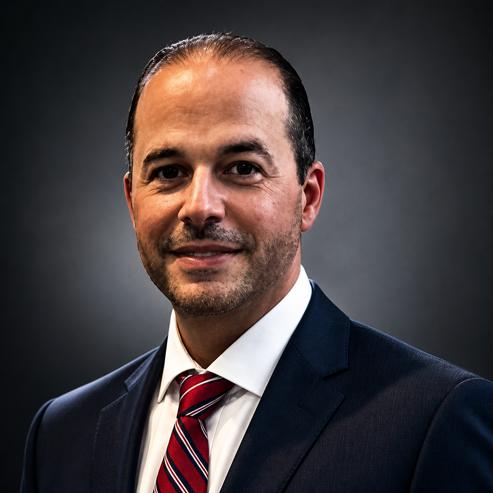

Solutions Engineering Leader · AI & Cloud Architecture
Trusted advisor and pre-sales leader with 10+ years at Microsoft and SHI — known for deep technical credibility, customer-first empathy, and the courage to be transparent when it matters most.
Strategic technology — Measurable outcomes.
Available for strategic IT consulting, executive advisory, and enterprise digital transformation engagements.
I partner with enterprise sales organizations to win complex, multi-stakeholder deals — not by pitching features, but by architecting solutions that solve real business problems. My edge is the intersection of deep technical credibility and genuine customer empathy: I focus on whether solutions are truly right for the customer, not just whether they close a deal.
At Microsoft, I served as the senior technical lead across all major enterprise pursuits — coordinating 10+ cross-functional engineers, designing AI/Copilot POC environments, and facilitating C-suite workshops. Colleagues describe me as a trusted advisor who opens "new rooms of the house" with creative prospecting at accounts like LSU, University of Missouri, Tulane, SIU, and DeVry.
I'm recognized for having the courage to be transparent about trade-offs — even when the news isn't favorable — because that's what builds the relationships that move deals forward and keep customers coming back.
Sourced from Microsoft 360° peer review and customer feedback. Full LinkedIn recommendations available on request.
Open to senior Solutions Engineering, Pre-Sales leadership, and AI/cloud strategy roles. Find me on LinkedIn and let's connect!

Fares Amari
Solutions Engineering Leader
Greater New Orleans Metropolitan Area